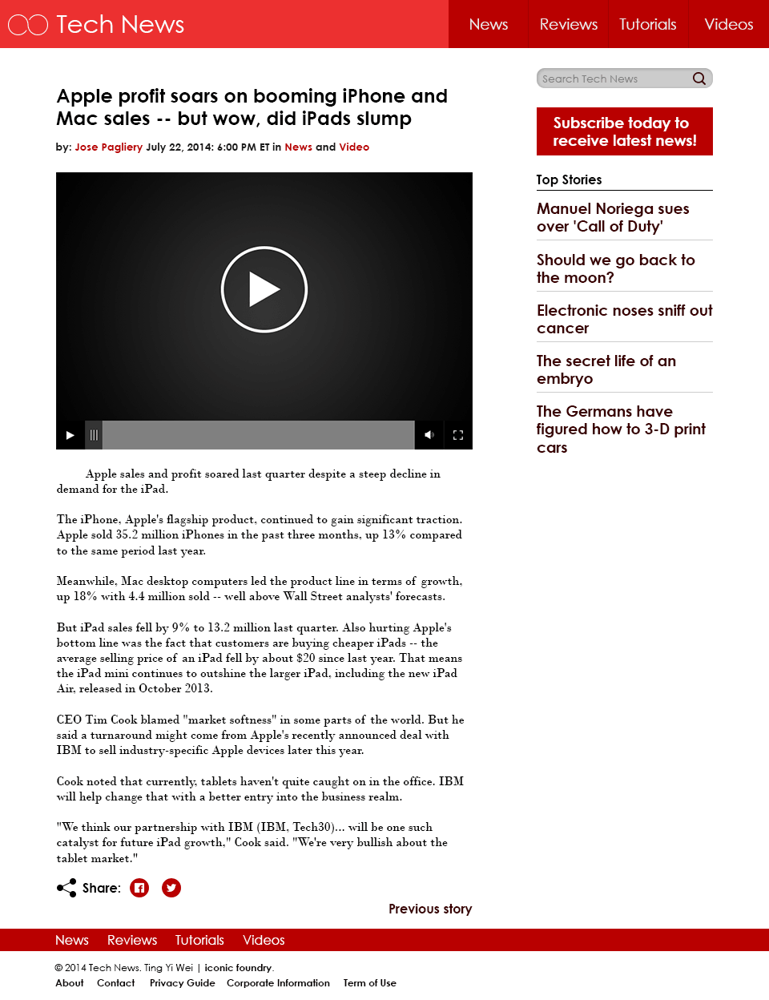
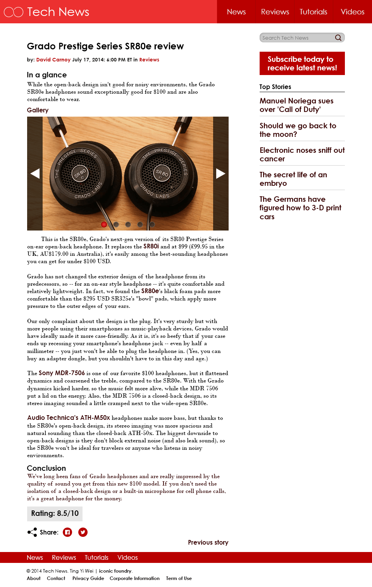

Tech News
Skills
- Adobbe Photoshop
- Adobe Illustrator
Description
Tech News is a mockup of information technology news publication website. This will be part of the mockup series, which will also consist of an e-commerce website. The news found on the website are courtesy of CNN Tech and CNET.
Ideation
I always enjoyed designing website mockups. Designing mockups also allows me to exercise my user experience design skills as I will have to think about the user flow and the placement of every individual component. The brand colour chosen for the website is a vibrant red colour (#EC3030). The main reason for using this intense colour is because many of the news publication websites such as CNN and Channel News Asia are using red as their brand identity colour. The objective here is to mimic such existing websites is to subconsciously remind readers that they are currently on a news publication website.
Brand identity
The logo for Tech News above is an opened infinity symbol. This is to represent the infinite potential of information technology.
Specifications
Layout
Desktop
Landing page
The website follows a full width two columns design. The left column occupies a larger width as it contains content of higher importance. The search, subscribe box and top stories are found on the right column.
Video news page

The video player was designed to be dark to contrast against the white background of the web page. The video player allows the users to perform basic media control such as playing, pausing, seeking of the video, as well as adjusting the audio level and toggling between fullscreen and docked mode.
Review page
Each review page has a set of product images found before the actual review article. The review also has a section named "At a Glance" to which summarises the article for readers who would just like to know the gist of the article. The review rating is located at the end of the review article, and it is placed against a grey backing to stand out against its neighbouring component. There is also a sharing section found after the score for users to share the article onto their Facebook or Twitter account. Readers can also proceed to the previous or next article after reading through the current article by clicking on the next or previous story link.
Mobile
The mobile version follows a 1 column design. This modification is to maximise the readability of the content. Only the top stories section is kept in the mobile version and is moved below the breaking news section. The latest news section has a grey background to contrast it against the rest of the stories. This is to capture the readers' attention upon first glance of the website. Cover images of the stories were also removed to reduce data required to load the web page. This is to improve the loading speed on the mobile version. Only the four navigation tabs are left on the footer for a minimal design.
Buttons
Buttons are intentionally painted with a dark red background to invoke a strong call for action emotion in the readers. This is especially important for the subscribe button found on the right column. To further strengthen the call for action emotion in the readers, the subscribe button has a bigger margin compared to its immediate neighbouring components. This is to draw attention to it.